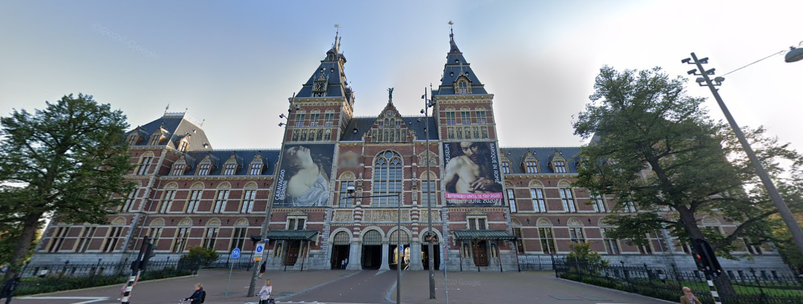

- 
Het Rijksmuseum
Het Rijksmuseum is a museum located in Amsterdam, with a collection consisting of Dutch art and history with the work from famous artist like Rembrandt. It’s one of the 16 ‘Rijksmusea’ in the Netherlands, where collections from the empire are displayed. One of the most famous artworks displayed in het Rijksmuseum is de Nachtwacht, which translates to the Nightguard.